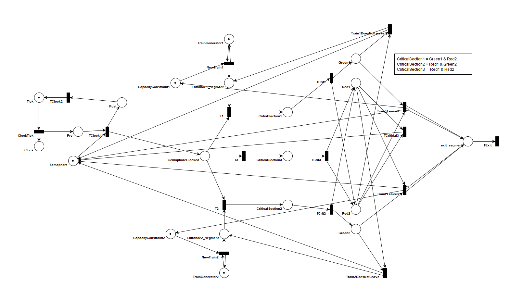

Assignment 4: Petri Nets
- Rafael De Smet - 20131145
- Benoît-Philippe Fornoville - 20133299
This report shows the results of assignment 4.
Complete solution

Invariant analysis
Invariants:
- M(TrainGenerator1) = 1
- M(TrainGenerator2) = 1
- M(Pre) + M(Post) + M(Tick) = 1
- M(CapacityConstraint1) + M(CritialSection1) + M(Entrance1_segment) + M(Green1) = 1
- M(CriticalSection2) + M(Entrance2_segment) + M(CapacityConstraint2) + M(Green2) = 1
- M(SemaphoreClocked) + M(Semaphore) + M(CritialSection1) + M(CriticalSection2) + (CriticalSection3) + M(Green1) + M(Red1) = 1
- M(SemaphoreClocked) + M(Semaphore) + M(CritialSection1) + M(CriticalSection2) + M(CriticalSection3) + M(Green2) + M(Red2) = 1
Invariant 1 and 2
As mentioned in the name TrainGenerator1 is a generator place. It can create an infinite amount of trains for track1.
Analoguesly TrainGenerator2 can create trains for the second incoming segement.
Invariant 3
The clock has a clock tick that can be in tree phases: tick, pre or post.
Invariant 4 and 5
The first incoming segment can contain maximum one train. If there is no train CapacityConstraint1 will be 1. When a train enters segment1 Entrance1_segment wil be 1 and CapacityConstraint1 will be 0. Then it waits for the semaphore. When the train receives the semaphore it can enter CriticalSection1, which will lead to a green light (Green1). When the light is green the train can either leave the segment, which will put CapacityConstraint1 back to 1, or it can choose to stay, thus setting Entrance1_segment back to 1.
Segment2 works analoguesly.
Invariant 6 and 7
Invariant 6 and 7 express that we have a semaphore that can be used to enter one of the 3 critical sections.
- CriticalSection1
will set Green1 to 1 and Red2 to 0.
- CriticalSection2
TODO